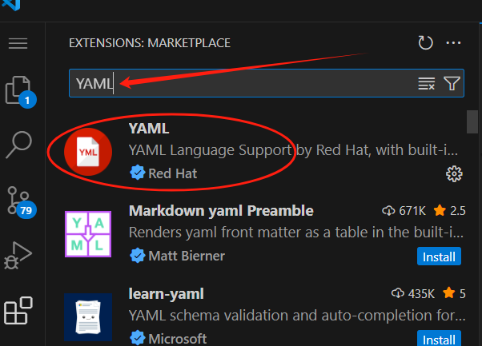
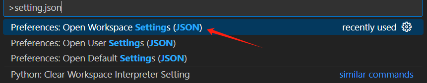

创建你的站点
在你已经安装了 mkdocs-material 之后（见上一章 Installation），你就可以使用 mkdocs 命令行工具快速初始化一个项目。
1. 初始化项目结构
mkdocs new .
这条命令会在你当前目录下创建一个 MkDocs 项目，包含以下结构：
.
├─ docs/
│ └─ index.md # 这是你文档的首页
└─ mkdocs.yml # 项目的配置文件
说明： - index.md 是你网站的默认首页。 - mkdocs.yml 是整个站点的配置文件，包括站点名、主题、导航等内容。 - 你可以用 VS Code 打开这些文件开始写文档。
2. 配置
最简配置
你至少需要在mkdocs.yml 设置 site_name 和theme主题名称：
site_name: My site
site_url: https://mydomain.org/mysite
theme:
name: material
site_url 的重要性: - site_url 表示你文档网站的最终访问地址; - 很多插件依赖这个字段，例如站点地图、SEO、评论系统等; - 如果你部署到 GitHub Pages（非根域名），必须设置它；
番外： 代码补全建议（配置智能提示） Material 提供了一个 schema.json 文件，可以让编辑器对 mkdocs.yml 提供： - 自动补齐 - 实时校验 - 高亮显示 - 在VS Code中启用步骤： - 安装插件：YAML (by RedHat)

- 在 settings.json 中添加：

{
"yaml.schemas": {
"https://squidfunk.github.io/mkdocs-material/schema.json": "mkdocs.yml"
},
"yaml.customTags": [
"!ENV scalar",
"!ENV sequence",
"!relative scalar"
]
}
3. 高级配置
Material for MkDocs 原生集成了一系列强大的 Markdown 扩展功能，极大地提升了技术写作效率，让撰写文档变得轻松高效。常见扩展功能包括：
- 更改颜色(举例）
- 配色系统总览 Material for MkDocs 遵循 Google Material Design 色彩标准，支持通过 mkdocs.yml 配置主题配色，还可使用 CSS 变量自定义品牌风格。
-
基本配色配置
- 亮/暗模式切换 default：亮色模式（默认） slate：暗色模式
bash theme: palette: scheme: default # 或 slate- 主色（primary color） 控制网站头部、侧边栏、链接等的主色调。可设置为如 indigo、blue、green 等预定义颜色。
theme: palette: primary: indigo- 强调色（accent color） 用于交互元素，如悬停链接、按钮、滚动条的颜色。
theme: palette: accent: indigo- 配色切换功能 可以启用主题色切换按钮，位于搜索框旁，允许用户手动切换“亮 / 暗”模式。
yaml theme: palette: # Palette toggle for light mode - scheme: default toggle: icon: material/brightness-7 name: Switch to dark mode # Palette toggle for dark mode - scheme: slate toggle: icon: material/brightness-4 name: Switch to light mode- 跟随系统主题 支持根据操作系统的亮/暗偏好自动切换配色：
theme: palette: - media: "(prefers-color-scheme: light)" scheme: default - media: "(prefers-color-scheme: dark)" scheme: slate还可增加“自动模式”图标，适用于白天/夜间自动切换：
yaml theme: palette: - media: "(prefers-color-scheme)" toggle: icon: material/brightness-auto name: Switch to light mode- 自定义颜色 如果预设配色不满足需求，可以完全自定义颜色。方法如下：
- 设置 primary 或 accent 为 custom：
theme: palette: primary: custom- 创建 CSS 文件，定义变量覆盖默认颜色：
:root > * { --md-primary-fg-color: #EE0F0F; --md-primary-fg-color--light: #ECB7B7; --md-primary-fg-color--dark: #90030C; }3. 注册该样式文件：yaml extra_css: - stylesheets/extra.css- 自定义配色方案（命名配色） 你还可以自定义命名配色方案，比如 mycolor：
css [data-md-color-scheme="mycolor"] { --md-primary-fg-color: #EE0F0F; --md-primary-fg-color--light: #ECB7B7; --md-primary-fg-color--dark: #90030C; }yaml theme: palette: scheme: mycolor extra_css: - stylesheets/extra.css如果使用 slate 模式，还可通过调整 --md-hue 值来控制整体色调：
css [data-md-color-scheme="slate"] { --md-hue: 210; # 色相值范围为 0~360 } -
字体、语言、图标
- 配置页眉、页脚、导航
- 启用搜索、社交图、博客、标签、评论
- 启用版本控制、Git 仓库、数据隐私
- 构建优化或离线浏览
4. 模板支持
官方提供了多个模板，可帮助你快速启动项目，例如： - 博客模板： 快速创建技术博客； - 社交卡片模板： 生成带预览图的文档页面。
5. 实时预览功能
- 使用
mkdocs serve命令可启动本地预览服务器，文档修改后会自动刷新。 - 浏览器访问
localhost:8000即可查看实时效果。